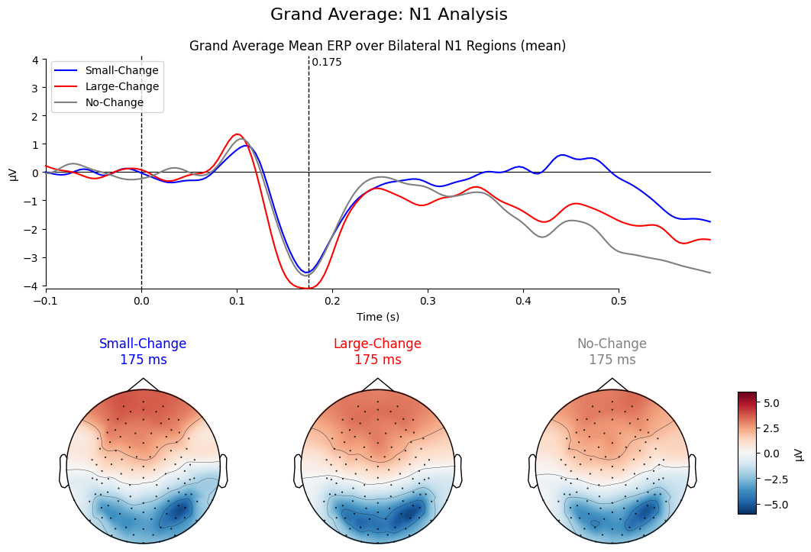
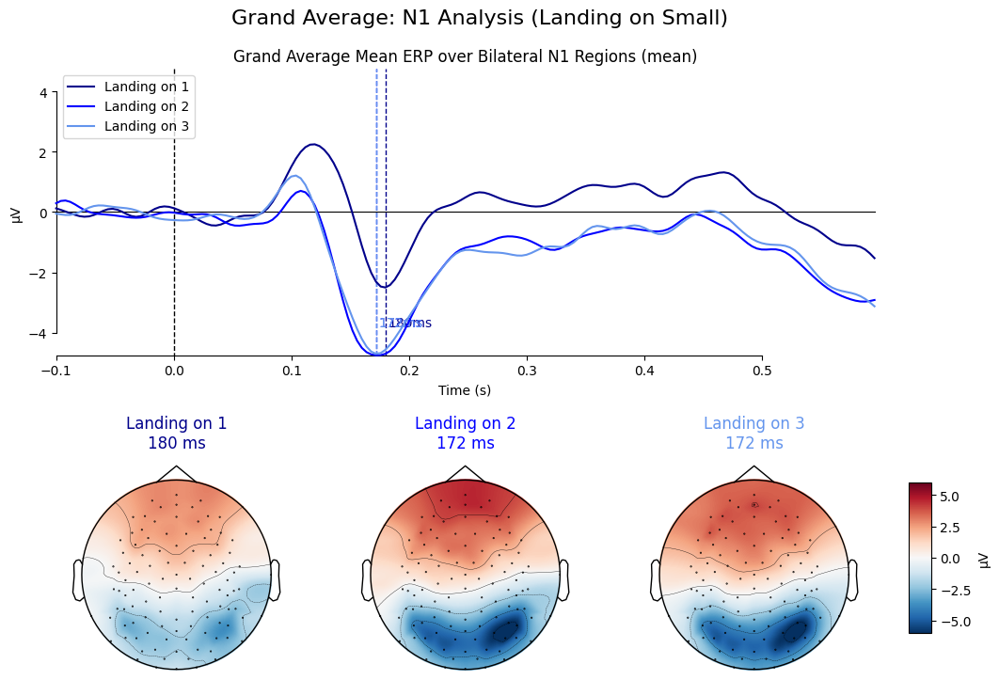
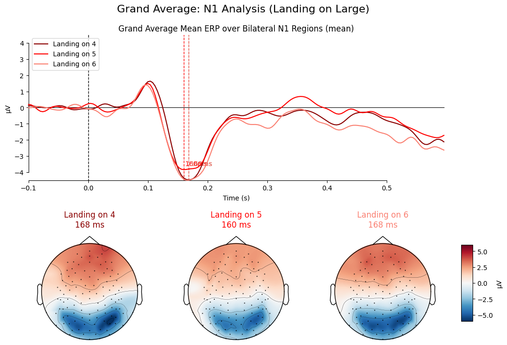
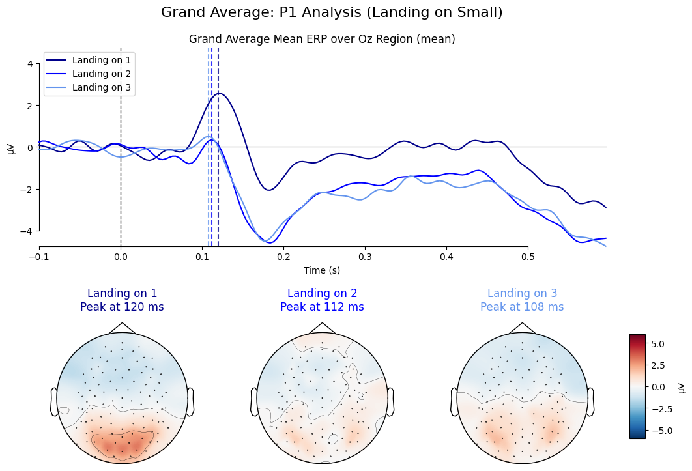
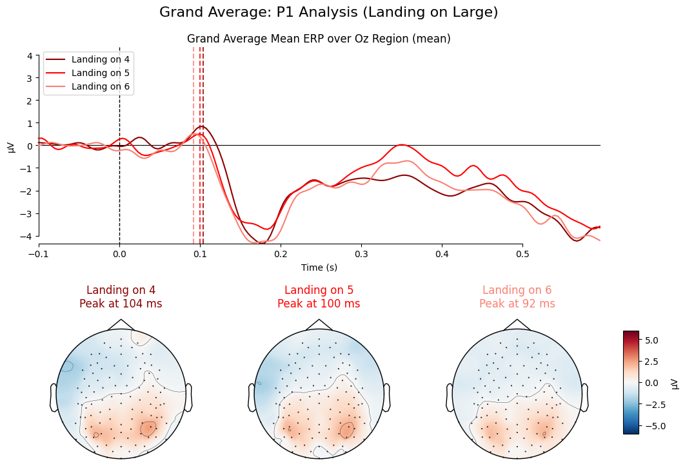

ERP & Topomap Plots
N1 Component Analysis
N1 Component Analysis - Landing on Small
N1 Component Analysis - Landing on Large
P1 Component Analysis - Landing on Small
P1 Component Analysis - Landing on Large
ERP Waveforms
Content for this section will be added soon.
LORETA Source Localization
Content for this section will be added soon.